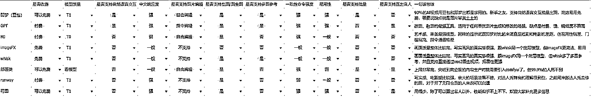

来源：https://ncnmu5q1eqm9.feishu.cn/docx/BO85dU5ypo9pdJxJ7MpcgB8Cnzc
大家好，我是Gary曹淦，和波妮一起担任YouTube生财深海圈总教练。
从3月12号深海圈正式启动到今天，过去了三个多月，宝剑锋从磨砺出，梅花香自苦寒来，有心的圈友也许会发现，每次我们做分享，似乎都有新的变化，那么废话少说，上数据，这是1月私教陪跑启动时、深海圈4月底和6月底采集的三次数据。

以及最近亦仁哥又发布了新一期超级标08：YouTube AI中长视频，生财团队邀请我们为08超级标提供一线实战素材，这里贴上一些来自圈友们这个月分享的数据
6月份深海圈友分享的shorts频道收益，已经有圈友通过 AI shorts实现月入五千刀
YouTube深海圈 运气选手走得远教练，220万播放AI长视频收益：https://www.youtube.com/watch?v=AXWBe4Bmv9A
YouTube深海圈ISLAND教练的单条AI长视频，RPM高达6.36
YouTube深海圈小芬教练的AI长视频近一月收益
YouTube深海圈NaNa教练的AI长视频近一月收益
YouTube深海圈困困教练的AI长视频近两月收益

相信有很多看着我们从当初一路走过来的圈友，也有很多对我们不熟悉甚至是刚加入生财不久的圈友，所以这篇帖子就来给大家汇报一下 ，我们这几个月都做了些什么。
从私教陪跑的一个月到深海圈的三个月，我们的进展时间线是这样的：
初步搭建了私教陪跑手册，教练为我和方波妮两人（报名104人，开营数据采集了70多位圈友，总播放量9000万，一共2个高级YPP，3个初级YPP）
2月中旬：进行了多场直播，分享了多条赛道与相关教程，从1月16日陪跑开始截止到2月15日，共有43个账号开通YPP（共计31人开通YPP，29.8%的人开通YPP，人均YPP0.41个）

建立起了YPP申诉审核小组、实战小组机制，开展6次专场直播、邀请优秀陪跑圈友进行加餐分享共12次，与大家一起打磨出17篇分享帖，其中精华帖10篇，超70位圈友共计达成107个YPP账号


社群扩张，我和方波妮教练两个人无法交付更多的圈友，于是咱们联合生财建立了教练体系、提拔更多优秀的圈友为实习教练，补充了账号移除和版权申诉审核机制，验证了YPP量产的可行性，拥有打造爆款shorts的能力，初步探索出了AI长视频的玩法，工作室一个月30+YPP，深海圈圈友150+YPP。
Youtube长视频赛道之猴子达人秀制作攻略：https://scys.com/articleDetail/xq_topic/4845554115242118
Youtube爆款元素重组打法&版权警示应对策略：https://scys.com/articleDetail/xq_topic/1524445218244182
200+YPP，AI微电影、海外AI自媒体、困困AIP玩法分享、小圈首个2.5亿播shorts与傻瓜式复刻教程（3.5万刀收益）
YouTube魔法女孩虚拟IP打造，赚到第一千美元：https://scys.com/articleDetail/xq_topic/8852451555221842

250+YPP，近十位亿播圈友，基于4月底问卷调查的圈友反馈，优化迭代了深海圈手册内容结构，开展了第一期新人营，进行了数字人玩法、自动化一二期、AI工具横评与技巧分享，重构了深海圈小组共建机制 ，建立了深海圈风向标机制，开展了第一次公域直播等等。
从0手把手教你用n8n打造自动化生图动作流：https://scys.com/articleDetail/xq_topic/5125585851588524
任何人都可以复刻的高效AI视频制作工作流：https://scys.com/articleDetail/xq_topic/5121848225154524
AI图片视频工具测评与常用创作技巧讲解：https://scys.com/articleDetail/xq_topic/5125414222521284

运气&酷拉4000刀AI达人秀长视频、山海经、疗愈猫猫、传统长视频赛道复刻等多中长视频赛道攻略分享，深圳、北京两场线下聚会，AI传术师线上线下两次分享
美国山海经中长视频赛道分享：https://scys.com/articleDetail/xq_topic/8852445514518152
YouTube猫咪疗愈长视频拆解：https://scys.com/articleDetail/xq_topic/8852445548148582
通过AI傻瓜式模仿一个长视频频道：https://scys.com/articleDetail/xq_topic/8852445442481842
打造你的第一个百万爆款长视频：https://scys.com/articleDetail/xq_topic/1524115488251212
AI给内容生产带来的变化是
这三者结合在一起，举个极端点的例子，也就是“普通人也能够一天出100条精美的AI视频”。
这其实是非常恐怖的事情，像上面举的几个例子，12月份的千万爆款达人秀视频，当时手搓可能1个小时出一个，但是现在如果上工作流跑自动化，多台设备和账号并行，一天几百上千个真不是开玩笑的。（当然，现在对内容质量的要求也不同了）
所以AI内容的进化和迭代速度非常快——如果之前的内容失去门槛、泛滥成灾，那么它也就没有了意义。
AI内容既是我们得以快速发展的优势，也是我们不得不为止时刻奔跑的劣势。
那么在AI内容的赛道里，什么才是核心竞争力？
对于AI的理解和运用能力：不理解AI、不会用AI，那就等于没有AI；
对于内容的理解和识别能力：内容的理解能力是基础，没有对内容的理解，做出来的AI内容也只能是量产的赛博垃圾；
信息差：包括了YouTube、AI、内容、出海领域等多方面的信息差，只有时刻走在时代的最前沿，才能不被快速更迭的时代淘汰，才能做出被别人模仿的内容，做出被别人模仿的模式；
学习能力与执行力：只有不断地学习和实践，才能让上面几项产生意义，否则都是空中楼阁，AI不能把知识灌进你的脑子，也不能替代你去做每一件事情。
结合前面切入AI赛道的原因，从培养大家的核心竞争力出发，我们从1月份开始，就尽可能地在各个深海圈的信息传递渠道共享AI信息和AI工具，让大家理解AI、学会AI、利用AI，抹平大家的信息差。

说到AI内容其实很难绕得开自动化，我们对自动化的理解是，绝大部分人，做自动化工具的消费者就足够了。所以我们会定期邀请像邵先森和李香君教练这样的自动化高手，来搭建和分享一些工作流，教大家使用自动化工具对内容创作进行提效，这里两张图分别是李香君教练的n8n生图工作流和邵先森的达人秀变身出图工作流，感兴趣的圈友，原文链接在前面有放
做了两张简陋的图，大家可以意会一下。
AI能力的迭代改变了很多很多，但现在的AI还抹不平不存在于训练集中的信息差，也教不会没用过AI的普通人。
这半年走过来，不谈咱们的情况，因为加了不少其他的YouTube社群，我其实看到了很多不在生财、不在深海圈，在其他社群或者自己一个人做YouTube的小伙伴，不少去年11月份、12月份就开始做，做了很多个号没做起来，到现在可能还不知道怎么解决IP问题、怎么环境隔离，到底什么赛道有流量。
真的不能怪他们不努力，是YouTube在国内的信息差实在是太大、太多，大部分问题找AI也问不出个所以然，因为AI的知识来自于训练和搜索，没有训练集、没有公开信源，何来答案呢？新人起步一路上会碰到太多太多的问题，而能够解决这些问题的渠道少之又少，我认为这也是过去YouTube普及度极低的原因。
所以我们认为，新人要入局YouTube，最首要的任务就是要抹平信息差、选择正确的方向、做正确的努力。从私教陪跑开始到3月航海再到现在的深海圈新人营，我们提供的所有赛道和教程都是在满足时效性前提下被验证过的，这就意味着大家会面对的所有问题，都有教练和其他圈友解决过，并且赛道的数量也足够大家做出选择，而不是相互内卷。
我们没有灵丹妙药，让大家0基础上来就开通YPP赚到美金，但我们能通过社群交流、直播、教练一对一咨询、手册等各种交付手段，为大家打好基础，保驾护航，避免在错误的道路上努力，缩短试错和自己摸索的时间。
我们对生财YouTube深海圈的定义是社群产品，我们提供陪跑性质的服务，是因为大家在前期有很多信息差还没有对齐、很多基本的创作技能和运营规则还不熟悉，确实需要陪跑，所以我们现在会、将来也会持续为需要打基础的新圈友提供从0到1的陪跑服务。
但其实这个过程并不需要太长时间，打好了基础，完成了从0到1，往后的日子里更需要的是信息、资源、杠杆，以及同行高手们的陪伴。
做AI赛道时间长一点的对这个点一定深有体会，真的很多时候拿到结果差的就是一个信息差和一个行动的念头。
这里以小圈作为案例，从我分享信息给他看到对标账号到做微创新发出去，小圈只用了一天，并且在接下来的十多天里对视频的要素进行了改良与增减，于是在半个月后，他的改良版视频迎来了2.5亿的播放量。
和小圈类似的圈友还有困困，本来做的也是平平无奇的达人秀赛道，但是有了思路之后马上就开始固定人物形象往AIP的方向走，同时进军长视频，也实现了刚进深海圈两个月就斩获近两千刀的好成绩，有兴趣的可以看看困困的文章https://scys.com/articleDetail/xq_topic/8852451555221842
前几个月，我们邀请了大厂AI电影设计师裘裘老师来分享AI商业微电影的制作、AI MCN机构三个智能负责人贺小波老师和全网30万+粉丝的AI自媒体博主汤姆cc老师来给大家分享海外AI自媒体的行业现状和实操指南、Ajin老板的JOGGAI产品负责人大东老师和我，来做JOGGAI和YouTube数字人玩法的实操分享，就是希望能够给大家足够前沿的信息，提供一个基本的思路，让大家能够在自己感兴趣、擅长的领域走出属于自己的路。
这是用imageFX+JOGGAI做的一个演示case，比较粗糙，但相信为大家揭示出一条宽广的海外AI自媒体道路是足够了。
从私教陪跑到现在的深海圈，高手分享一直都是咱们的优良传统，从一开始更多分享赛道从0到1教程，到现在更多的会分享自动化、前沿信息和变现玩法，本来加餐分享是文字+图片，现在一般都是直播，因为我们感受到直播有更强的交互感，能在交互中产生思维的碰撞，这是文字交流无法替代的。
随着教练和圈友们逐渐发展出了一些专精的赛道和方向，会产生针对某些细分领域深耕和交流的需求，就像生财有了生财小组一样，深海圈也到了需要推出共创精英小组的阶段。
从第一个推出的是由轻舟教练和特邀嘉宾裘裘老师带队的AI微电影小组，加入小组的都是希望在精品AI内容方向长期深耕的圈友，小组会以各平台举办的比赛作为日常的任务目标，在未来，我们也将陆续推出更多不同垂类方向的小组，严格筛选，让有意愿、有能力的圈友能够在同行高手的陪伴下更深度进行内容创作。
近一个月以来，我们根据圈友的需求增加了7个不同的实战小组，优选有精力、有实力的圈友，走在赛道和玩法探索的前沿，并且定期直播，把踩坑和成功经验分享给大家，把个人努力变成集体共创，放大时间的杠杆。

熟悉生财YouTube深海圈的圈友可能知道，私教陪跑期间只有我和波妮两位教练；到了深海圈，几个月时间陆续从优秀圈友中精挑细选出近十位咨询教练和超过十位答疑教练。
两个人的力量十分有限，YouTube私教陪跑属于从0到1，在此期间我们的所有时间几乎都投入在了每周直播、手册制作、咨询和社群答疑上，只能疯狂压缩休息时间来探索其他赛道和变现方向，几个月无休，每天都是本层楼最后一个下班的。
如果要把生财YouTube深海圈做到全球最大的YouTube社群，一定不能够只停留在AI shorts上，还有太多太多的方向和机会等着我们去开发，但圈友不能没有教练，而我们两个人也不可能做太多事情，所以一定要有更多的Gary和波妮，带大家挖赛道、测赛道、做内容、答疑解惑、开辟新方向，于是我们从热爱分享也拿到结果的优秀圈友里挖掘教练人选，慢慢地就有了咱们现在20人的教练团。教练们真的非常优秀。
没有教练们的辛苦付出，就没有今天的深海圈，教练们同时为深海圈提供了社群交付和项目探索的双重放大，让我们得以去争取更多更好的资源、收集更新更前沿的信息、搭建更完善的运营机制来进一步赋能教练与深海圈友。
最后一个部分，也是最重要的一个部分，自然就是咱们生财提供的大力支持。
说起来真是感慨万千，于我个人而言，命运的齿轮确实是在看到亦仁哥YouTube AI shorts超级标，并且下场实操的时候开始转动。
应该也有不少圈友是看着我和波妮从第一个达人秀ypp精华帖（24天7万粉，开通YPP，108刀收益帖：https://t.zsxq.com/0EvBO；10月底从0到1跑通YouTube项目实操帖：https://t.zsxq.com/vvusr），到12月航海高手领航，到传术师线下大会，到私教陪跑，再到深海圈。可能真的是阴差阳错让亦仁哥在线下大会听错了误以为我在当时开通了5个YPP(实际上是开了两个，还有三个快开的，而且还是加上了一起做的朋友)，让亦仁哥记住了我。
为了让第一次私教陪跑能够抓住时间窗口尽快落地并且达到预期的效果，生财实战负责人欢欢以及团队和我们一起做了好几轮调研和测试，连坤汀哥也亲自下场以鱼丸身份了解用户需求，波妮和我也是连夜赶制私教陪跑相关的交付方案与物料，这才有了一月份一经推出两小时售罄的私教陪跑。
也正是生财成熟的运营模式和庞大的资源加持，再加上超强的信任背书，让我和波妮能够在当初把绝大部分精力放在交付、放在产品的打磨、放在项目的深挖，而不是要去想怎么宣传，怎么拉新，怎么放大，所以一二月份真的是不分日夜地给大家做交付，没有后顾之忧地做分享，这也才有了一个半月跑出100+YPP地私教陪跑。
而生财YouTube深海圈，最早也是亦仁哥提出来，针对YouTube这个赛道地长期垂类深耕社群，衔接私教陪跑和航海后希望进一步长期从事YouTube创作的圈友，而我和波妮其实没有太多犹豫就答应了，一直和大家走到了今天，不断成长、不断迭代。
如果说这个世界上能够诞生一个YouTube领域的生财有术，那最有可能把它孵化出来的，一定是生财有术。
不知不觉三个月又过去了，深海圈今天已经有了近三十位亿播圈友和超过300个高级YPP频道，人均几千万播放
在1月统计的时候，70份问卷加起来的总播放量是9000万，YPP数量是2个高级3个初级。没有什么奇迹，有的只是日复一日的学习和练习，一天天视频一次次分享积累起来的努力。也许YouTube深海圈不是最强的社群，但它一定是成长和进化最快的社群，所有的变化都呈现给你，这就是陪伴的意义
最后肯定是要打广告啦！心动不如行动，加入我们一起出海赚美金💲
深海圈本轮报名时间：6月24日-7月6日晚24点
双向审核机制：7月7号审核报名表，审核通过后会拉群
本期新人营时间：7月11日-8月10日
Youtube 深海圈报名链接： https://scys.com/view/form/z27Vzvp2
请大家认真且如实填写报名表，我们会审核报名表单。
本周四晚上七点，YouTube深海圈会邀请优秀圈友连麦分享，欢迎对深耕YouTube感兴趣的圈友围观，可扫码预约直播。